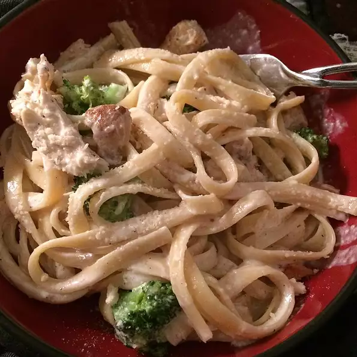

Fettuccini

Description:
This is a tasty and fattening recipe that pasta lovers will adore.
You won't be able to make it just once!
Ingredients:
- 1 lb. (16 ounce) package fettuccine noodles
- 3 pints (48 ounces) heavy whipping cream
- 1 cup grated romano cheese
- 4 tablespoons butter
- 1 pinch ground nutmeg
- ground black pepper to taste
Steps:
- Cook pasta according to directions on package.
- Drain and toss with one tablespoon of butter, cover and set aside.
- In a medium sauce pan over low heat, mix cream and 3 tablespoons of butter, stirring constantly.
- When cream begins to simmer, mix in a small amount of romano cheese, stirring constantly, until all cheese is added and sauce has reduced.
- Sauce should be this and easily coat the back of a spoon.
- Stir in nutmeg and black pepper.
- Toss with warm fettuccini and serve.